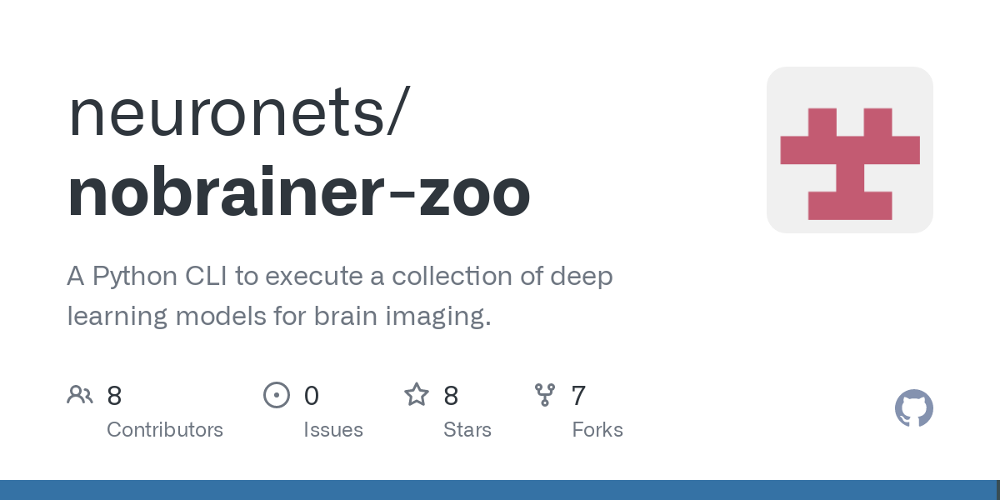
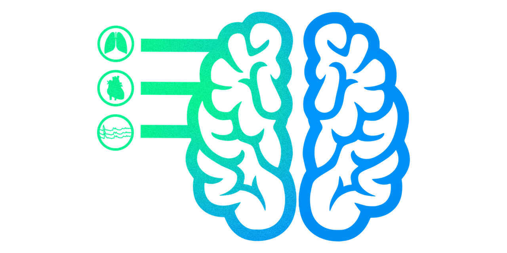

Brainhack Vanderbilt
January 20th - 21st, 2024
Vanderbilt University
23rd Ave N, Nashville, TN 37212
About
A Quick Dive into Brainhack
So, you've heard of hackathons, right? Now, imagine that vibe but tailored specifically for the brainy world of neuroscience. That's Brainhack for you!
Why the Buzz Around Brainhack?
Neuroscience has some big questions on its plate. To tackle them (we're talking about massive datasets and some serious analytical firepower) Brainhack steps in. It's like a global rendezvous for brain enthusiasts, data geeks, and everyone in between.
What's Cooking at Brainhack?
Brainhack isn't just another science conference. Picture a global playground where researchers from all corners and fields come together. They roll up their sleeves and dive headfirst into some cool neuroscience projects.Brainhack has this groovy mix of Hackathon energy with Unconference spontaneity. Workshops? Check. Brainstorming data science tools for neuroscience? Double-check. A major chunk is all about open collaboration. Imagine teams from different disciplines geeking out and brainstorming solutions for neuroscience puzzles.
And because learning never stops, Brainhack has a side of tutorials. Dive into Python, get friendly with GitHub, float around in cloud computing, or dive deep into some fresh statistical methods. To wrap it up, Brainhack isn't just an event—it's a vibe. A place where data science flirts with neuroscience, all in the name of unlocking the secrets of the brain. Cool, right?Brainhack Vanderbilt is dedicated to a harassment-free conference experience for everyone. Our anti-harassment policy can be found here: Code of Conduct
Hacking Schedule
| Saturday, January 20th | |
|---|---|
| 8:30 - 9:30 AM | Registration & Breakfast. |
| 9:30 - 10:00 AM | Hybrid Welcoming Ceremony. |
| 10:00 AM - 11:15 PM | Hybrid Project Pitches. |
| 11:15 AM - 12:00 PM | Hackers Convene. |
| 12:00 - 1:00 PM | Lunch & Keynote. |
| 1:00 - 5:00 PM | Open Hacking. |
| 1:00 - 5:00 PM | Neural Networking Night. |
| Sunday, January 21st | |
| 8:30-9:00 AM | Breakfast, Coffee & Morning Social. |
| 9:00 AM-12:00 PM | Hacking Proceeds. |
| 12:00-1:00 PM | Lunch & Keynote. |
| 1:00-2:00 PM | Hacking & Wrapping. |
| 2:00-3:00 PM | Hybrid Project Presentations & Awards. |
Training Schedule
| Saturday, January 20th | ||||
|---|---|---|---|---|
| Time | Track #1 | Track #2 | Track #3 | Track #4 |
| 1:00-2:00 PM | Primer: Structural Neuroimaging | Primer: Functional Neuroimaging | Introduction to Python, Git, Bash | |
| 2:00-3:00 PM | Open Science | Reproducible Project Management | ||
| 3:00-4:00 PM | Neuroimaging Data Visualization | Applications of Machine/Deep Learning in Neuroimaging | ||
| 4:00-5:00 PM | High Performance Computing | Containers | Python Packaging with PIPY | Software Continuous Testing |
Projects
Example project - nobrainer

Nobrainer-zoo is a toolbox with a collection of deep learning neuroimaging models that eases the use of pre-trained models for various applications. During the hackathon, we aim to incorporate new models into the zoo along the lines of existing ones. Some of the models include TopoFit, CorticalFlow, Vox2Cortex, CortexODE, PialNN, and many other deep learning-based neuroimaging models that users would want to see as part of the nobrainer-zoo.
Another cool example project - PhysioQC

Physiopy is a collection of toolboxes to acquire, standardize and process physiological data, and now we would like to incorporate a quality assurance toolbox for physiological data. If you are familiar with MRIQC, or afni proc quality control - we want to do something similar, but for physiological data. During the hackathon, we aim to implement an automated workflow to generate textual and image-based reports.
Get in touch
-
Email
- roza.g.bayrak at vanderbilt.edu
- catie.chang at vanderbilt.edu
-
Organizers
- Roza Gunes Bayrak, Faculty Organizer
- Catie Chang, Faculty Organizer
- Sarah Goodale, HackTrack Coordinator
- Shiyu Wang, TrainTrack Coordinator
- Michelle Bukowski, Event Consultant
Brainhack Vanderbilt is supported by:


Location
Vanderbilt University
23rd Ave N, Nashville, TN 37212